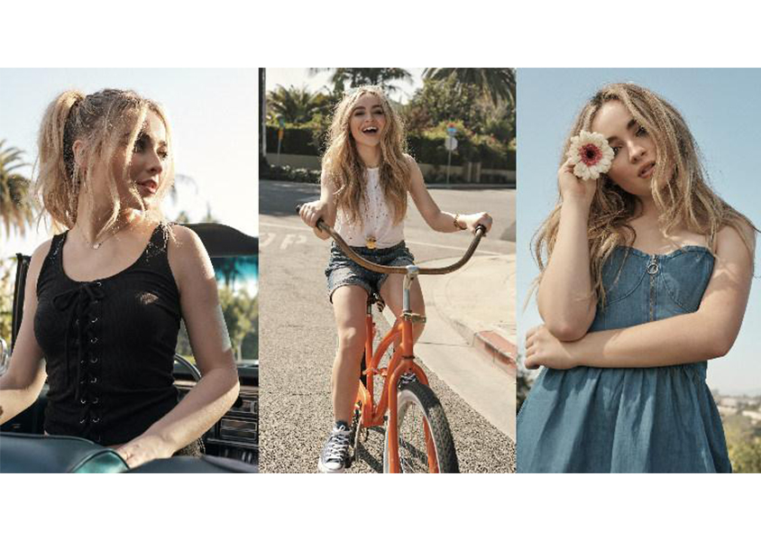
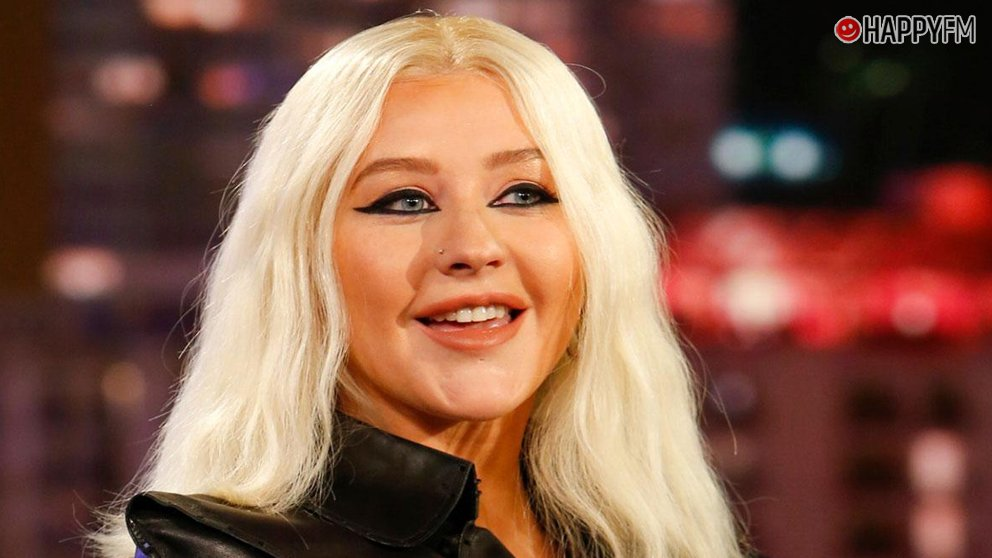
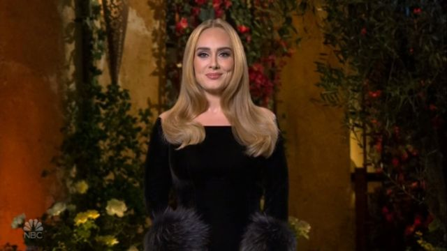
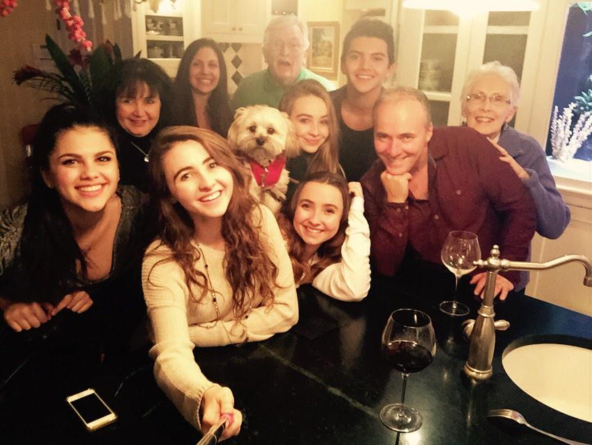
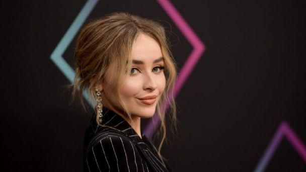

Sabrina Ann Lynn Carpenter (Lehigh Valley, Pensilvania; 11 de mayo de 1999) es una cantante y actriz estadounidense. Es más conocida por su papel recurrente como la versión joven de Chloe Goodwin en The Goodwin Games y como Maya Hart en la serie de Disney Channel Girl Meets World. Luego de firmar con Hollywood Records, su EP debut Can't Blame a Girl for Trying fue lanzado en 2014, y desde entonces ha lanzado cuatro álbumes de estudio: Eyes Wide Open (2015), Evolution (2016), Singular: Act I (2018) y Singular: Act II (2019).
En una entrevista con Disney Insider, Carpenter citó a Christina Aguilera y Adele como influencias musicales.
 Carpenter tiene una hermana mayor, Sarah Carpenter, que ha aparecido como un personaje de fondo en varios episodios de Girl Meets World. Tiene además otras dos hermanas mayores, Shannon Carpenter, y una medio hermana de parte de su padre, Cayla Carpenter.
Es sobrina de la actriz Nancy Cartwright, conocida por prestar su voz para las voces de Bart Simpson y otros personajes de Los Simpson.
Tuvo un papel recurrente en la serie de FOX The Goodwin Games y participó en un episodio de Orange Is the New Black en el 2013.
